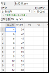

7장에서 10장까지 우리들은 추정과 검정에 관하여 알아보았는데 모두가 한 변량에 대한 모집단의 모수들(모평균, 모분산)에 관한 연구였다.
이 장에서는 두 변량 또는 그 이상의 변량들에 관하여 얼마만큼 관련이 있는지 연구하는 상관분석과,
또 관련이 있다면 어떻게 이 관련성을 이용할 수 있는지 알아보는 회귀분석을 설명한다.
12.1 상관분석
두 변량의 관련성을 관찰할 수 있는 쉬운 방법은 한 변량의 값을 축으로 하고 다른 변량의 값을 축으로 하여 산점도
(scatterplot)를 그려보는 것이다. 두 변량이 관련이 있다면 자료들은 일정한 규칙을 가지고 모일 것이고, 관련이 없다면
흩어져 있을 것이다. 상관분석(correlation analysis)은 변량들 간의 선형관계의 정도를 분석하는 방법이다.
이를테면, 한 변량이 증가할 때 다른 변량이 얼마나 선형적으로 증가 또는 감소하는가를 조사하는 것이다.
두 변량간의 관계의 정도를 구체적인 수치로 나타내어주는 측도를 함께 이용하면 두 변량간의 관계를 더욱 정확하고 객관적으로
파악할 수 있다. 두 변량 사이의 상호관계를 나타내는 측도로서 먼저 공분산(covariance)이 있는데 두 변량
X와 Y의 모집단에 대한 공분산은 Cov(X,Y)로 나타낸다. 두 변량에 대한 n개의 확률표본
\((X_1 , Y_1 ), ... , (X_n , Y_n )\)이 주어졌을 때 이들 표본을 이용한 추정치, 즉, 표본공분산 \(S_{XY}\) 는 다음과 같이 정의된다.
$$\small
s_{XY} = \frac{1}{n-1} \sum_{i=1}^{n} ( X_i - \overline X )( Y_i - \overline Y )
$$
위의 식에서 \(\small \overline X\)와 \(\small \overline Y\)는 각각 X와 Y의 표본평균을 나타낸다. 공분산의 의미를 파악하기 위해
X가 증가할 때 Y 역시 증가하는 경우를 생각해보자. 이 경우 \(\small \overline X\) 보다 큰 X값에 대응하는 Y값 역시
\(\small \overline Y\) 보다 크고, \(\small \overline X\) 보다 작은 X값에 대응하는 Y값 역시 \(\small \overline Y\) 보다 작아진다.
그래서 \(\small (X - \overline X ) (Y - \overline Y)\)는 항상 양수값을 가지며 이들의 평균인 공분산 역시 양수 값을
가진다. 이와는 반대로 한 변량의 값이 증가할 때 다른 변량의 값이 감소하면 공분산의 값은 음수가 된다는 것을 쉽게 알 수 있다.
그러므로 공분산을 계산함으로써 양의 상관(즉, 한 변량의 값이 증가하면 다른 변량의 값도 증가)이나 음의 상관(즉, 한 변량의
값이 증가하면 다른 변량의 값은 감소)의 두 변량간 상호관계를 알 수 있다.
공분산 자체도 좋은 측도이나 공분산은 X와 Y의 단위에 의존하기 때문에 값의 크기에 따른 해석이 어렵고 또한 다른 자료와 비교할 때
불편하다는 단점이 있다. 변량의 종류나 특정단위에 관계없는 측도를 구하기 위해 공분산을 X와 Y의 표준편차인 \(\sigma_X\)와
\(\sigma_Y\)의 곱으로 나누어 표준화시키는데 이를 모집단상관계수(population correlation coefficient)라
부르고 \(\rho\)(‘로오’라고 읽음)라고 표시한다.
$$
\text{모집단상관계수: } \rho = \frac{Cov (X, Y)} { \sigma_X \sigma_Y }
$$
상관계수 \(\rho\)는 다음과 같이 해석된다.
1) \(\rho\)는 -1과 +1 사이의 값을 가지며, \(\rho\)의 값이 +1에 가까울수록 강한 양의 선형관계를, -1에 가까울수록 강한 음의 상관관계를 나타내며, \(\rho\)의 값이 0 에 가까울수록 선형관계는 약해진다.
2) X와 Y의 대응되는 모든 값들이 한 직선 상에 위치하면 \(\rho\)의 값은 -1(직선의 기울기가 음인 경우)이나 +1(직선의 기울기가 양인 경우)의 값을 가진다.
3) 상관계수 \(\rho\)는 단지 두 변량의 선형관계만을 나타내는 측도이다. 그러므로, \(\rho\) = 0인 경우에 두 변량의 선형상관관계는 없지만 다른 관계는 가질 수 있다.
두 변량에 대한 n개의 표본을 이용한 모집단 상관계수 \(\rho\)의 추정치를 표본상관계수(sample correlation coefficient)라
부르며 \(r\)로 나타낸다. 표본상관계수의 공식은 모집단상관계수의 공식에서 각각의 모수를 추정량으로 대체하여 얻을 수
있다.
$$
r = \frac {s_{XY}} { s_X s_Y }
$$
\(s_{XY}\)는 표본공분산, \(s_{X}\)와 \(s_{Y}\)는 각각 \(X\)와 \(Y\)의 표준편차이다.
$$\small
\begin{align}
s_{XY} &= \frac{1}{n-1} \sum_{i=1}^{n} (X_i - \overline X )(Y_i - \overline Y ) \\
s_X^2 &= \frac{1}{n-1} \sum_{i=1}^{n} (X_i - \overline X )^{2} \\
s_Y^2 &= \frac{1}{n-1} \sum_{i=1}^{n} (Y_i - \overline Y )^{2} \\
\end{align}
$$
따라서 표본상관계수 \(r\)은 다음과 같이 쓸 수 있다.
$$\small
r = \frac {\sum_{i=1}^{n} (X_i - \overline X )(Y_i - \overline Y )} { \sqrt{\sum_{i=1}^{n} (X_i - \overline X )^{2} \sum_{i=1}^{n} (Y_i - \overline Y )^{2} } } \\
$$
표본상관계수 \(r\)은 모집단상관계수 \(\rho\)의 가설검정에 이용된다. \(\rho\)에 대한 가설검정에서 주로 관심 있는 것은
\(H_0 : \rho = 0\), 즉, 선형상관관계의 존재여부에 대한 것인데, 이에 대한 가설검정은 t 분포를 이용하여 다음과 같이 할 수 있다.
귀무가설: \(\qquad \quad H_0 : \rho = 0\)
검정통계량: \(\qquad t_0 = \sqrt{n-2} \frac{r}{\sqrt{1 - r^2 }}\),
\( \quad t_0 \)는 자유도가 \(n-2\)인 \(t\) 분포를 따른다.
『eStatU』 주메뉴에서 ‘상관계수’를 선택하면 다음과 같은 화면이 나타난다. 여기에서 상관계수를 입력하고 [실행] 버튼을 누르면 이 상관계수를 가는 두 변수에 대한 산점도가 그려진다.
[Correlation Simulation]
[그림 12.1] 『eStatU』 상관계수 실험
🎲 예 12.2
동일한 제품을 만드는 10개의 회사들에 대한 광고비와 판매액을 조사한 결과 표 12.1의 자료를 얻었다(단위: 백만원).
표 12.1 판매액과 광고비자료
회사
광고비 (X)
판매액 (Y)
1
4
39
2
6
42
3
6
45
4
8
47
5
8
50
6
9
50
7
9
52
8
10
55
9
12
57
10
12
60
[Ex] ⇨ eBook ⇨ EX120101_SalesByAdvertise.csv.
1) 『eStat』을 이용하여 이 자료의 산점도를 작성하고 두 변량의 관련성을 조사하라.
2) 공분산과 상관계수를 구하라.
3) 광고비와 판매액의 상관계수가 0이라는 가설을 유의수준 0.05에서 검정하라.
풀이
1) 『eStat』을 이용하여 [그림 12.2]와 같이 데이터를 입력한다. 주메뉴의 산점도 아이콘을 누르면 나타나는 변량선택창에서 ‘Y변량’을 판매액, ‘by X변량’을 광고비를 선택하면 [그림 12.3]과 같은 산점도가 나타난다. 산점도는 광고비의 투자가 많을수록 판매액이 증가하는 것을 보여주고, 그뿐만 아니라 증가의 형태가 선형이라는 것을 알 수 있다. .

[그림 12.2] 『eStat』 데이터 입력
[그림 12.3] 광고비와 판매액에 대한 산점도
2) 공분산과 상관계수를 구하기 위해서는 다음과 같은 표를 만드는 것이 편리하다. 이 표는 회귀분석에서의 계산에도 그대로 이용할 수 있다.
\(t_{8; 0.025}\) = 2.306 보다 크게 되어 가설 \(H_0 : \rho = 0\) 을 기각할 수 있다.
[그림 12.2]와 같이 『eStat』의 변량이 선택된 상태에서 주메뉴의 회귀분석 아이콘을 누르면 산점도와 회귀선이 나타나고 이 그래프 밑의
‘상관 및 회귀분석’ 버튼을 누르면 결과저장창에 상관분석과 회귀분석 결과가 나타난다. t값의 결과가 약간 다른데 이는
소숫점 아래 자리수에 관련된 오차이다. 상관분석 검정에 대한 p-값은 0.0001로 유의수준 0.05보다 작으므로 귀무가설을 기각한다는 같은 결론을 얻는다.
[그림 12.4] 『eStat』의 상관분석 결과
『eStatU』를 이용하여 공분산과 상관계수를 구할수 있다. 주메뉴에서 ‘산점도-상관계수’를 선택하면 [그림 12.4]와
같은 화면이 나타난다. 여기에 광고비와 판매액을 입력하고, 주제목을 입련한 후 [실행] 버튼을 누르면 공분산과
상관계수가 계산되고 상관계수의 검정결과와 산점도가 그려진다.
[]
[그림 12.5] 『eStatU』 상관분석
분석에 포함된 변량들이 3개 이상인 경우에도 각 두 변량들의 조합에 대해 위의 산점도를 이용하여 그 관계를 볼 수 있고,
상관계수값을 구할 수 있다. 그렇지만 변량들의 관계를 한 눈에 알기 쉽게 하기 위하여 각 변량들 간의 상관계수를 행렬형태로
정리할 수 있는데 이를 상관계수행렬(correlation matrix)이라 한다. 『eStat』에서는 상관계수행렬과 그 값들에 대한 유의성 검정의 결과를 함께 보여 준다. 검정의 결과는 값과 -값을 보여준다.
『eStat』에서 ⇨ 01Korean ⇨ 123중회귀_붓꽃iris.csv 데이터를 불러온 후 ‘회귀분석’ 아이콘을 누른다. 변량선택박스가 나타나면 마우스로 차례로 꽃받침길이, 꽃받침너비, 꽃잎길이, 꽃잎너비의 네 변량을 선택하면 [그림 12.6]과 같은 산점도행렬이 나타난다. 꽃받침길이와 꽃잎길이, 꽃잎너비, 그리고 꽃잎길이와 꽃잎너비가 관련이 있음이 관찰된다.
[그림 12.6] 『eStat』의 산점도행렬
그래프 밑의 선택사항에서 ‘상관 및 회귀분석’을 선택하면 결과저장창에 [그림 12.7]과 같은 데이터의 기초통계량과 상관계수행렬이 검정결과와 함께 나타난다. 꽃받침길이와 꽃받침너비 사이의 상관계수를 제외한 모든 상관계수가 유의함을 알 수 있다.
[그림 12.7] 『eStat』의 여러 변량에 대한 상관계수행렬
12.2 단순선형회귀분석
회귀분석(regression analysis)은 먼저 변량들 간의 관계를 나타내는 타당한 수학적 모형을 설정하고,
변량들의 측정된 값을 이용하여 그 모형을 추정한 다음, 추정한 모형에 의해 변량들 간의 관계를 설명하든지 또는 예측
등의 분석에 응용하는 통계적 방법이다. 예를 들어, 판매액(Y)과 광고비(X)의 관계에 대한 수학적 모형
\(Y = f(X)\)을 설정하였다면 판매액과 광고비와의 관계를 설명할 수 있을 뿐 아니라, 일정한 광고비를 투자했을 때의 판매액을 예측할 수 있을 것이다.
이와 같이 회귀분석은 변량들 간의 관련성 정도와 관련형태 조사 및 예측에 그 목적이 있다고 할 수 있다.
회귀분석에서 변량들 간의 관계를 나타내는 수학적 모형을 회귀식(regression equation)이라 하며,
서로 관계를 가지고 있는 변량들 중에서 다른 변량에 의해 영향을 받는 변량을 종속변량(dependent variable)이라
한다. 종속변량은 우리가 설명하고자 하는 변량으로, 주로 다른 변량들에 대한 반응으로 관측되는 변량이므로
반응변량(response variable)이라고도 한다. 그리고 종속변량에 영향을 주는 변량을 독립변량
(independent variable)이라 부른다. 이는 종속변량을 설명하는데 이용하는 변량이므로 설명변량
(explanatory variable) 이라고도 한다. 앞의 예에서 광고비의 증감에 따른 판매액의 변화를 분석하는 것이 목적이라면
판매액은 종속변량에, 광고비는 독립변량에 해당된다. 그리고 회귀식에 포함된 독립변량의 개수에 따라 단순선형회귀(독립변량이 1개)와 중선형회귀(독립변량이 2개 이상)로 구분하고 있다.
단순선형회귀모형
단순선형회귀분석(simple linear regression analysis)은 1개의 독립변량만을 다루며 그 회귀식은 다음과 같이 나타내어진다.
$$
Y = f(X,\alpha,\beta) = \alpha + \beta X
$$
즉, 회귀식은 독립변량 X의 일차방정식으로 나타내어지며, α와 β는 각각 절편과 기울기를 나타내는 미지의 모수로
회귀계수(regression coefficient)라고 한다. 위의 식은 Y와 X의 미지의 직선관계를 나타내므로 이를 모집단
회귀식이라 부른다.
회귀계수 α와 β를 추정하기 위해서는 종속변량 와 독립변량 의 관측값들, 즉, 표본이 필요하다. 이때 이들
관측값들은 일반적으로 모두 일직선상에 위치하지는 않는다. 왜냐하면, Y와 X가 정확한 선형관계를 가지고 있다 하더라도
관측값에는 측정오차가 있을 수도 있고, 또는 실제로 Y와 X가 정확하게 선형관계를 형성하지 않을 수도 있기 때문이다.
그러므로 이들 오차를 함께 생각하여 회귀식을 다음과 같이 적을 수 있다.
$$
Y_i = \alpha + \beta X_i + \epsilon_{i}, \quad i=1,2,...,n
$$
여기에서 \(i\)는 전체 \(n\)개의 관측값 중 \(i\)번째 값을 나타내는 첨자이고, \(\epsilon_i\)들은 평균이 0,
분산이 \(\sigma^2\)인 서로 독립인 오차를 나타내는 확률변량으로 관측값 \(Y_i\)가 모집단 회귀식으로부터
\(\epsilon_i\) 만큼 떨어져 있음을 의미한다. 위의 식은 미지의 모수 α와 β를을 포함하므로 이를
모집단 회귀모형이라 부른다.
이에 대해 표본을 이용하여 추정된 회귀계수를 \(a\)와 \(b\)로 나타내면 적합된 회귀식(fitted regression)을
다음과 같이 적을 수 있고 이를 표본 회귀식이라 한다.
$$
{\hat Y}_i = a + b X_i
$$
이 식에서 \({\hat Y}_i\)은 적합된 회귀식에 의해 \(X=X_i\)에서 예측된 \(Y\)의 값을 나타낸다. 이들 예측된 값들은
\(Y\)의 실제 관측된 값들과 일치할 수는 없는데 이 두 값의 차이를 잔차(residual)라 부르고 \(e_i\)로 표시한다.
$$
\text{잔차} \qquad e_i = Y_i - {\hat Y}_i , \quad i=1,2,...,n
$$
회귀분석에서는 관측할 수 없는 오차인 \(\epsilon_i\)에 대해 몇 가지 가정을 하는데, 표본 값을 이용하여 계산되는
잔차 \(e_i\)는 \(\epsilon_i\)와 비슷한 성질을 가지므로 이들 가정의 타당성을 조사하는데 중요하게 사용된다. (잔차분석 참조.)
회귀계수의 추정
표본 \((X_1 , Y_1 ) , (X_2 , Y_2 ) , ... , (X_n , Y_n ) \)이 주어졌을 때 이를 대표하는 직선은
여러 가지로 그어질 수 있다. 회귀분석의 주된 목적 중의 하나가 예측이므로, 우리는 추정된 회귀식을 이용하여
\(Y\)의 값을 예측할 때 발생하는 오차인 잔차들을 가장 작게 하여 줄 수 있는 식을 선택하고자 한다. 그러나 모든
점에서 잔차의 값을 최소화할 수는 없고 잔차의 크기를 '전체적'으로 작게 하는 방법을 선택하여야 한다.
이러한 방법들 중 가장 널리 사용되는 것은 잔차의 제곱들의 합을 최소로 하는 회귀식을 구하는 방법으로 이를
최소제곱법(method of least squares)이라 한다.
최소제곱법에 의해 \(\alpha\)와 \(\beta\)의 값을 구하기 위해서는 위의 제곱합을 \(\alpha\)와 \(\beta\)
에 대해 각각 편미분하여 영으로 놓고 \(\alpha\)와 \(\beta\)에 대해 풀면 된다. 이때 얻어지는
\(\alpha\)와 \(\beta\)의 값을 각각 \(a\)와 \(b\)로 나타내면, 구하고자 하는 두 값은 아래의 두 식을 만족하게 된다.
$$\small
\begin{align}
\quad b &= \frac {\sum_{i=1}^{n} (X_i - \overline X ) (Y_i - \overline Y )} { \sum_{i=1}^{n} (X_i - \overline X )^2 } \\
\quad a &= \overline Y - b \overline X
\end{align}
$$
위의 식을 정규방정식(normal equation)이라 한다. 이 정규방정식의 해를 \(\alpha\)와 \(\beta\)의
최소제곱추정량(least squares estimator)이라 하며 다음과 같이 주어진다.
\(\alpha\)와 \(\beta\)의 최소제곱추정량
$$\small
\begin{align}
\quad b &= \frac {\sum_{i=1}^{n} (X_i - \overline X ) (Y_i - \overline Y )} { \sum_{i=1}^{n} (X_i - \overline X )^2 } \\
\quad a &= \overline Y - b \overline X
\end{align}
$$
여기서 \(b\)의 분모와 분자를 각각 \((n-1)\) 로 나누어 주면 \(b = \frac{s_{XY}}{s_{X}^2}\)로 쓸 수 있고,
상관계수는 \(r = \frac{s_{XY}}{s_X s_Y}\)이므로 \(s_{XY} = r S_x s_Y\) 이다. 따라서 상관계수를 알면 기울기는
$$
b = \frac{s_{XY}}{s_X ^2} = \frac{ r s_X s_Y } {s_X ^2 } = r \frac{s_Y}{s_X}
$$
로도 계산할 수 있다.
회귀직선의 적합도
가정된 회귀직선을 추정한 다음에는 그 회귀식이 얼마나 타당한가를 조사하여야 한다. 이를테면, 회귀분석의 목적은 종속변량을
독립변량의 함수로 설명하고자 함이므로 과연 그 설명의 정도가 어느 정도인지를 알아 볼 필요가 있다. 이와 같은 타당성
조사에는 잔차표준오차(residual standard error)와 결정계수(coefficient of determination)가 사용된다.
잔차표준오차 \(s\)는 관측값들이 추정회귀직선의 주위에 흩어져 있는 정도를 나타내는 측도이다. 먼저 잔차들의 표본분산을 다음과 같이 정의할 수 있는데
$$
s^2 = \frac{1}{n-2} \sum_{i=1}^{n} ( Y_i - {\hat Y}_i )^2
$$
잔차표준오차 \(s\)는 \(s^2\)의 제곱근으로 정의된다. 그리고 \(s^2\)은 Y의 값들이 모집단 회귀직선을 중심으로
퍼져있는 정도를 나타내는 \(\sigma^2\)의 추정량이 된다. \(s^2\)의 값이 작으면 관측값들이 추정회귀직선에 근접해 있음을 나타내고, 이는 역으로 추정회귀직선이 두 변량간의 관계를 잘 대표한다고 이야기할 수 있다.
그러나 잔차표준오차 \(s\)는 그 값이 '작으면' 좋은 것이지만 어느 정도의 값이 작은 것인지는 분명하지가 않다.
또한 \(s\) 값의 크기는 Y의 단위에 의존한다. 이러한 단점을 없애기 위해서는 상대적인 측도가 필요한데, 여기에서 정의할
결정계수(coefficient of determination)는 \(Y_i\)들이 가지는 총변량 중 회귀직선에 의해 설명되는
변량의 비(ratio)로서 주어지므로 변량의 종류와 단위에 관계없이 사용할 수 있는 상대적 측도 이다.
잔차들의 제곱합으로 \(Y\)의 총변동 중 설명 안된 변동(unexplained variation)을 나타내며 이를
오차제곱합(error sum of squares; SSE)이라 한다. 이 제곱합의 계산을 위해서는 두 개의 모수
\(\alpha\)와 \(\beta\)를 추정해야 하므로, \(SSE\)는 \(n-2\)자유도를 가진다. 잔차들의 표본분산
\(s^2\)의 계산에서 \(n-2\)로 나누어주는 이유는 여기에 있다.
만일 추정된 회귀식이 모든 표본의 변동을 완전히 설명하고 있다면 (즉, 모든 관측값들이 표본회귀직선 위에 있을 경우),
설명 안된 변동 \(SSE\)는 0이 될 것이다. 따라서, 총제곱합 \(SST\) 중에서 \(SSE\)가 차지하는 부분이 작으면,
또는 \(SSR\)이 차지하는 부분이 크면 추정된 회귀모형의 적합도가 높다고 할 수 있다. 그러므로, 총변동 \(SST\) 중에서
설명된 변동 \(SSR\)이 차지하는 비,
$$
R^2 = \frac{\text{설명된 변동}}{\text{총 변동}} = \frac{SSR}{SST}
$$
을 결정계수(coefficient of determination)라 정의하고 회귀직선의 적합도를 나타내는 측도로 사용한다. 결정계수의 값은 항상 0 과 1 사이에 있고 그 값이 1에 가까울수록 표본들이 회귀직선 주위에 밀집되어 있음을 뜻하고 이는 추정된 회귀식이 관측값들을 잘 설명하고 있다는 것을 뜻한다.
회귀의 분산분석
위의 세 가지 제곱합을 자유도로 나누면 각각은 일종의 분산이 된다. 이를테면, \(SST\)를 자유도 \(n-1\)로
나누면 \(Y\)의 관측값 \(Y_1 , Y_2 , ... , Y_n\)의 표본분산이며, \(SSE\)를 자유도 \(n-2\)로 나누면
오차의 분산인 \(\sigma^2\)의 추정량 \(s^2\)이 된다. 이런 이유로 제곱합의 분할을 이용하여 회귀분석과 관련된 문제를 다루는 것을 회귀의 분산분석이라 한다. 계산된 제곱합과 자유도 등 분산분석에 필요한 정보는 표 12.3과 같은 분산분석표에 정리될 수 있다.
표 12.3 단순 선형회귀의 분산분석표
요인
제곱합
자유도
평균제곱합
F 값
회귀
SSR
1
MSR =\(\frac{SSR}{1}\)
\(F_0 = \frac{MSR}{MSE}\)
오차
SSE
\(n-2\)
MSE = \(\frac{SSE}{n-2}\)
전체
SST
\(n-1\)
제곱합을 자유도로 나눈 값을 평균제곱합(mean square)이라 하는데 표 12.3에는 회귀평균제곱합
(regression mean square; MSR)과 오차평균제곱합(error mean square; MSE)이 각각 정의되어 있다.
식에서 알 수 있듯이 \(MSE\)는 \(\sigma^2\)의 추정량 \(s^2\)과 같은 통계량이다.
마지막 열에 주어진 F값은 가설 \(H_0: \beta = 0 ,\; H_1 : \beta \ne 0 \)의 검정에 사용된다.
만약 \(\beta\)가 0 이 아니라면 가정된 회귀식이 타당하여 \(Y\)의 변동이 회귀식에 의해 상당 부분 설명될 것이므로
F값이 클 것을 예상할 수 있다. 그러므로, 우리는 역으로, 계산된 F 비가 충분히 크면 \(\beta\)가 0이 아니라고
결정할 수 있다. 모집단 회귀모형에서 언급된 오차항에 대한 가정이 성립하고 오차항이 정규분포를 따르면 귀무가설
\(H_0: \beta = 0 \) 하에서 F 비는 자유도 1과 \(n-2\)의 F 분포를 따름을 보일 수 있다. 그러므로, 만약
\(F_0 > F_{1,n-2; α}\)이면 \(H_0: \beta = 0 \)을 기각할 수 있다.
1) 판매액을 종속변량, 광고비를 독립변량으로 할 때 절편과 기울기의 최소제곱 추정값을 구하라.
2) 광고비가 10만큼 지출하였을 때의 판매액을 예측하라.
3) 광고비와 판매액에 관한 자료에서 잔차표준오차와 결정계수의 값을 계산하라.
4) 분산분석표를 작성하고 유의수준 5％로 검정을 하여보라.
풀이
1) [예 12.2]에서 이미 절편과 기울기를 구하는데 필요한 계산을 하였는데 이를 이용해서 절편과 기울기를 구하면 다음과 같다.
\(\small \quad b = \frac {\sum_{i=1}^{n} (X_i - \overline X ) (Y_i - \overline Y )} { \sum_{i=1}^{n} (X_i - \overline X )^2 } \\
= \frac {151.2}{60.4} = 2.503
\)
\(\small \quad a = \small \overline Y - b \overline X = 49.7 - 2.503 \times 8.4 = 28.672 \)
따라서 적합된 회귀식은 \(\small \hat Y_i = 28.672 + 2.503 X_i \) 이다. [그림 12.8]은 원래의 자료 위에 적합된 회귀식을 그려본 것이다. 위에서 2.5033은 직선의 기울기로 광고비가 1만큼, 즉, 백만원씩 증가하면 판매액은 약 2.5백만원씩 증가함을 의미한다.
[그림 12.8] 『eStat』의 단순선형회귀 산점도와 회귀선
2) 광고비가 10인 회사에서의 판매액의 예측은 위의 표본회귀식을 이용하여 \(\quad \small 28.672 + (2.503)(10) = 53.702 \)
즉, 약 53.7백만원의 판매액이 예상된다. 이는 광고비가 10백만원인 모든 회사들의 판매액이 53.7백만원이 된다는 것이 아니라 그 회사들의 판매액 평균이 그 정도 된다는 것이다. 그러므로, 개개의 회사에 있어서는 약간의 차이가 있을 수 있다.
3) 잔차표준오차와 결정계수를 구하기 위해서는 다음과 같은 표 12.4를 만들면 편리하다. 여기서 각각의 \(X_i\) 값에서
판매액의 추정값은 적합된 회귀식을 이용한다.
표 12.4에서 \(SST\) = 396.1, \(SSR\) = 378.429, \(SSE\) = 17.622 이다. 여기서
\(SST\) = \(SSE\) + \(SSR\) 인 관계가 정확히 맞지 않는 것은 소수이하 자리수 계산의 오차 때문이다. 잔차들의 표본분산은 다음과 같다.
이것은 관측된 10개의 판매액이 가지는 총변동의 95.6％를 광고비라는 변량을 사용한 단순선형회귀모형으로 설명할 수 있다는 것을 의미하므로 이 회귀직선은 상당히 유용하다고 할 수 있다.
[그림 12.8] 그래프 밑의 선택사항에서 ‘상관 및 회귀분석’ 버튼을 누르면 [그림 12.9]와 같은 결정계수와 추정오차를 보여준다.
[그림 12.9] 『eStat』의 결정계수와 추정오차 계산 결과
표 12.4에서 계산한 제곱합을 이용하여 분산분석표를 작성하면 다음과 같다.
요인
제곱합
자유도
평균제곱합
\(\small F\) 값
회귀
378.42
1
MSR = \(\frac{378.42}{1}\) = 378.42
\(F_0 = \frac{378.42}{2.20}\)
오차
17.62
10-2
MSE = \(\frac{17.62}{8} = 2.20\)
전체
396.04
10-1
F 검정에서는 계산된 F 값은 \(\small F_{1,8; 0.05} = 5.32 \)보다 매우 크므로 유의수준 α = 0.5에서 'β가 0 이다'라는 가설을 기각할 수 있다.
[그림 12.8] 그래프 밑의 선택사항에서 ‘상관 및 회귀분석’ 버튼을 누르면 [그림 12.10]과 같은 분산분석 결과를 보여준다.
[그림 12.10] 『eStat』의 분선분석 결과
다음 『eStatU』모듈을 이용하여 단순선형회귀분석을 할 수 있다.
[]
회귀분석에서의 추론
모집단 회귀모형의 오차항 \(\epsilon\)이 평균이 0, 분산이 \(\sigma^2\)인 정규분포를 따른다는 가정 하에서 회귀계수
α와 β, 그리고 그 외 모수들에 관한 추론을 할 수가 있다. 참고로 회귀모형 \(Y = \alpha + \beta X + \epsilon \)
에서 위의 가정 하에 \(Y\)는 평균이 \(Y = \alpha + \beta X \) 이고 분산이 \(\sigma^2\) 인 정규분포를 따름을
알 수 있다.
1) 모수 β에 관한 추론
회귀직선의 기울기인 모수 β는 종속변량과 독립변량간의 선형관계 존재여부와 그 정도를 나타낸다. β에 관한 추론은
아래와 같이 요약될 수 있는데, 특히 가설 \(H_0 : \beta = 0\)에 대한 검정은 독립변량이 종속변량을 유의적으로 설명하는지에 대한 것으로 중요하게 사용된다.
평균값 \(\mu_{Y|x}\)의 신뢰구간 공식을 보면 표준오차가 주어진 X의 값에 의존하므로 신뢰구간의 폭은 주어진 X의 값에 따라 달라진다.
표준오차의 공식에서 알 수 있듯이 이 폭은 \(\small X = \overline X\) 일 때에 가장 좁고 X가 \(\small \overline X\)에서 멀어질수록
넓어진다. X의 각 점에서 Y의 평균값에 대한 신뢰구간을 구한 다음 상한들과 하한들을 제각기 연결하면 표본회귀식 위아래로 곡선을
형성하게 되는데 이를 회귀직선의 신뢰대(confidence band)라 한다.
잔차분석
각 모수에 대한 추론은 모두 모집단 회귀모형에 포함된 오차항 ε에 대한 몇 가지 가정을 바탕으로 하고 있다.
그러므로, 타당한 추론을 하기 위해서는 이들 가정들의 성립이 중요한 전제조건이 된다. 그러나 오차항 ε은 관측될 수
없는 값이기 때문에 이들의 일종의 추정량인 잔차를 이용하여 이들 가정의 타당성을 조사하는데 이를 잔차분석
(residual analysis)이라 한다.
먼저 회귀분석에서의 가정을 살펴보자.
\(\quad \)회귀분석에서의 가정
\(\quad \;\; A_1\): 가정된 모형 \(Y = \alpha + \beta X + \epsilon\)은 옳다.
\(\quad \;\; A_2\): 오차 \(\epsilon_i\)의 평균값은 0이다.
\(\quad \;\; A_3\): (등분산성) 모든 \(\epsilon_i\)의 분산은 모든 \(X\)값에 대해 \(\sigma^2\)으로 동일하다.
\(\quad \;\; A_4\): (독립성) 오차 \(\epsilon_i\)들은 서로 독립이다.
\(\quad \;\; A_5\): (정규성) 오차 \(\epsilon_i\)들은 정규분포를 따른다.
이들 가정들의 자세한 의미는 참고문헌을 살펴보기 바란다. 이들 가정들의 타당성은 일반적으로 잔차의 산점도를 이용하여 조사되는데 각각의 가정을 위해 주로 사용되는 산점도는 다음과 같다.
\(\quad \)1) 잔차 대 예측값 (즉, \(e_i\) vs \(Y_i\)) : \(\quad A_3\)
\(\quad \)2) 잔차 대 독립변량 (즉, \(e_i\) vs \(X_i\)) : \(\quad A_1\)
\(\quad \)3) 잔차 대 관측순서 (즉, \(e_i\) vs \(i\)) : \(\quad A_2 , A4\)
위의 산점도들에서는 잔차들이 0을 중심으로 특정한 경향을 보이지 않고 랜덤하게 나타나면 각 가정이 타당함을 의미한다.
오차항 ε이 정규분포를 따른다는 가정은 자료가 많은 경우 잔차들의 히스토그램을 작성하여 정규분포의 모양과 비슷한지를 보아
그 타당성을 조사할 수 있다. 또 다른 방법은 잔차들의 Q-Q 산점도(quantile–quantile plot)를 이용하는 방법이다.
일반적으로 잔차의 Q-Q 산점도가 직선을 형성하면 정규분포를 따른다고 볼 수 있다.
잔차들도 종속변량 Y의 단위에 의존되므로 잔차분석을 할 때 일관성있는 해석을 위하여 잔차들의 표준화된 값을 사용하는데 이를
표준화 잔차라 한다. 위에서 설명한 잔차들의 산점도와 Q-Q 산점도 모두 표준화 잔차를 사용하여 작성된다.
특히 표준화 잔차의 값이 ± 2를 벗어나면 이상값 또는 특이값을 의심할 수 있다.
🎲 예 12.5
[예 12.2]의 광고비 예제에서
1) 각 모수에 대한 추론을 하라.
2) 『eStat』을 이용하여 검정결과와 신뢰대를 확인하라.
3) 잔차들의 산점도와 Q-Q 산점도를 작성하라.
풀이
1) β에 관한 추론
β의 점추정량의 값은 \(b\) = 2.5033 이고, \(b\)의 표준오차는 다음과 같다.
t값은 \(\frac{29.672}{1.67}\) = 17.1657 이고 \(t_{8; 0.025}\) = 2.056 이므로, 역시 유의수준 5% 에서
'절편이 0 이다'는 가설은 기각된다.
Y의 평균값에 관한 추론
『eStat』에서는 \(\mu_{Y|x}\)의 추정값인 \(\small \hat Y\)의 표준오차를 각 관찰점에서 계산하여 준다.
예를 들어, X = 8에서 점추정값은 \(\small \hat Y\) = 28.672 + 2.503 × 8 = 48.696 이고,
이에 대한 표준오차는 0.475 이다. 그러므로, \(\mu_{Y|x}\)에 대한 95％ 신뢰구간은 다음과 같다.
본문에서 언급한 것처럼 신뢰구간의 폭은 X가 \(\small \overline X\)에서 멀어질수록 넓어짐을 알 수 있다.
2) [그림 12.8] 그래프 밑의 선택사항에서 ‘신뢰대’를 선택하면 산점도-회귀선 그래프에 [그림 12.11]과 같은 신뢰대를 그려준다. ‘상관 및 회귀분석’ 버튼을 누르면 결과저장창에 [그림 12.12]와 같은 각 모수의 추론 결과를 보여준다.
[그림 12.11] 『eStat』의 회귀 신뢰대
[그림 12.12] 『eStat』의 각 회귀모수 추론
[그림 12.8] 그래프 밑의 선택사항에서 [잔차와 예측값] 버튼을 누르면 [그림 12.13]과 같은 표준화 잔차와 예측값 산점도를 그려주고, ‘잔차 Q-Q 산점도’를 누르면 [그림 12.14]가 나타난다. 잔차의 산점도는 특이사항이 없으나, Q-Q 산점도는 직선의 형태에서 많이 벗어나므로 오차항의 정규성에는 어느 정도 의심이 간다고 할 수 있다. 이러한 경우에는 반응변량의 값들을 로그변환이나 제곱근변환을 하여 다시 분석할 필요가 있다.
[그림 12.13] 광고비와 판매액 회귀결과의 잔차분석
[그림 12.14] 광고비와 판매액 회귀결과의 Q-Q 산점도
『eStatU』에서는 회귀선이 극단점에 얼마나 영향을 받는지 실험할 수 있다
🎲 예 12.6
『eStatU』을 이용해서 선형회귀분석의 극단점의 영향을 실험하여 보라.
풀이
『eStatU』주메뉴에서 ‘회귀선 실험’을 선택하면 다음과 같은 화면이 나타난다. 여기에서 화면에 마우스를 클릭하면 점이 찍힌다. 여러 개의 점을 만들면 그때 마다 회귀선이 바뀌는 정도가 얼마나 되는지 살펴볼 수 있다. 만들어진 점은 마우스로 눌러 이동하면서 상관계수와 결정계수가 얼마나 민감한지를 관찰할 수 있다.
[Regression Experiment]
[그림 12.15] 『eStatU』회귀선 실험
12.3 중선형회귀분석
회귀분석의 실제 응용에 있어서는 독립변량이 1개인 단순선형회귀보다는 독립변량이 2개 이상 포함된 중회귀모형이 더욱 빈번하게 사용된다.
왜냐하면, 종속변량이 단 한 개의 독립변량만으로 충분하게 설명되는 경우는 드물고, 대부분의 경우 종속변량은 여러 개의 독립변량들과
관계를 갖고 있기 때문이다. 예를 들어, 단순 선형회귀에서의 예제인 광고비와 판매액간의 관계에 있어서 판매액이 광고비에 의해
상당히 영향을 받지만 그 외에 제품의 품질등급, 판매매장의 개수와 크기 등에도 영향을 받을 것이라고 예상할 수 있다. 이와 같이
하나의 종속변량과 여러 개의 독립변량들 사이의 관계를 규명하고자 할 때 사용되는 통계적 방법이 중선형회귀분석
(multiple linear regression analysis)이다. 그러나 단순선형회귀분석과 중선형회귀분석은 관련된 독립변량들의 개수만 다를 뿐이고 분석방법에는 별다른 차이가 없다.
즉, 종속변량은 각 독립변량의 일차함수로 나타내어지며 여기에 단순선형회귀모형에서와 같이 오차항을 나타내는 확률변량 ε이
더해진다. 오차항 ε에 대한 가정은 단순선형회귀에서의 가정과 같다. 위의 식에서 \(\beta_0\)은 Y축의 절편, \(\beta_i\)는
Y와 \(X_i\)간의 기울기로써 다른 독립변량들이 고정되었을 때 \(X_i\)가 Y에 미치는 영향을 나타낸다.
일반적으로 중선형 회귀분석에서는 행렬과 벡터를 이용하면 식의 표현과 계산작업을 쉽게 할 수 있다. 이를테면, k개의 독립변량이
있는 경우 관측점 \(i=1,2,...,n\) 에서의 모집단 중선형회귀모형은 다음과 같은 간단한 식으로 나타내어진다.
$$
\mathbf {Y = X} \boldsymbol{\beta + \epsilon}
$$
중선형 회귀분석에서는 표본을 이용하여 \((k+1)\)개의 회귀계수 \(\beta_0 , \beta_1 , ... , \beta_k\) 를 추정할
필요가 있다. 이 경우에도 오차들의 제곱의 합을 최소로 하는 최소제곱법을 사용한다. 즉, 오차제곱의 합
$$
S = \sum_{i=1}^{n} \epsilon_{i}^2 = {\boldsymbol \epsilon ' \boldsymbol \epsilon} = ( \bf Y - \bf X' \boldsymbol \beta )'( \bf Y - \bf X' \boldsymbol \beta )
$$
를 최소화하는 \(\boldsymbol \beta\)를 구한다. 단순선형회귀에서와 마찬가지로 위의 오차제곱합을 \(\beta_i\)에 대해 미분하여 0으로 놓고
풀면 되는데, 이때 \(\boldsymbol \beta\)의 최소제곱추정량을 \(\bf b\)라 하면 \(\bf b\)는 다음의 정규방정식을 만족한다.
$$
\bf {(X'X) b = X'y}
$$
그러므로 만약 \(\bf {X'X}\)의 역행렬이 존재하면 \(\boldsymbol \beta\)의 최소제곱추정량 \(\bf b\)는
$$
\bf {b = (X'X)^{-1} X'y}
$$
로 주어진다.
표본을 이용하여 추정한 회귀계수를 \({\bf b} = (b_0 , b_1 , ... , b_k )\)라 하면, 반응변량 Y의 예측값은
$$
{\hat Y}_i = b_0 + b_1 X_{i1} + \cdots + b_k X_{ik}
$$
로 주어지고, 잔차는
$$
\begin{align}
e_i &= Y_i - {\hat Y}_i \\
&= Y_i - (b_0 + b_1 X_{i1} + \cdots + b_k X_{ik} )
\end{align}
$$
로 주어지며, 역시 벡터를 사용하여 잔차벡터 \(\bf e\)를 다음과 같이 정의할 수 있다.
$$
\bf {e = Y - X b}
$$
회귀모형의 적합도와 분산분석
중선형 회귀분석에서도 추정된 회귀직선의 타당성을 조사하기 위해 잔차표준오차와 결정계수가 사용된다. 단순 선형회귀에서 이들
측도의 계산공식은 잔차, 즉, Y의 관측값과 예측값의 함수로 주어지므로 독립변량의 개수와는 상관이 없었다. 그러므로,
중선형 회귀에서도 같은 공식을 사용할 수 있으며 단지 각 제곱합이 가지는 자유도의 값에 차이가 있다.
중선형 회귀분석에서 잔차표준오차는 다음과 같이 정의된다.
$$
s = \sqrt { \frac{1}{n-k-1} \sum_{i=1}^{n} (Y_i - {\hat Y}_i )^2}
$$
단순 선형회귀와의 차이는 잔차 \(e_i\)를 계산하기 위해서는 (k+1)개의 회귀계수가 추정되어야 하므로 남아있는 자유도는
(n-k-1)이다. \(s^2\)은 단순 선형회귀에서와 마찬가지로 잔차평균제곱((\(MSE\)))과 같은 통계량이다. 결정계수는
\(R^2 = \frac{SSR}{SST}\) 로 주어지며 그 해석은 단순 선형회귀에서와 같다.
제곱합도 단순 선형회귀에서와 같은 공식으로 정의되고, 대응되는 자유도와 함께 다음과 같이 분할될 수 있으며 이들을 이용한 분산분석표는 표 12.5에 주어져 있다.
위의 분산분석표에 주어진 F 값은 회귀식의 유의성 검정에 사용되는데 이 때의 귀무가설은 모든 독립변량은 종속변량과 선형관계가 없다는 것이다. 즉,
$$
\begin{align}
H_0 &: \beta_1 = \beta_2 = \cdots = \beta_k = 0 \\
H_1 &: \text{적어도} k \text {개의 } \beta_i \text{중 하나는 0이 아니다. }
\end{align}
$$
를 검정한다. 귀무가설 하에서 \(F_0\)는 자유도 \(k\)와 \(n-k-1\)인 분포를 따르므로 만약 \(F_0 \gt F_{k,n-k-1 ; α}\)
이면 \(H_0\)를 유의수준 α하에서 기각할 수 있다. 개개의 \(\beta_i\)에 대한 검정도 할 수 있다.
중선형회귀분석에서의 추론
단순 선형회귀에서와 같이 중선형회귀에서도 관심의 대상이 되는 모수는 각 회귀계수 \(\beta_0 = \beta_1 = \cdots = \beta_k\)
와 Y의 평균값이다. 이들 모수에 대한 추론은 점추정량의 확률분포를 구함으로써 가능하게 된다. 오차항 \(\epsilon_i\)들이
독립이고 모두 \(N(0, \sigma^2 )\)의 분포를 가진다는 가정 하에서
$$
b_i \sim N( \beta_i , c_{ii} \cdot \sigma^2 ), \quad i=0,1,2,...,k
$$
임을 보일 수 있다. 위에서 \(c_{ii}\)는 \((k+1)\times (k+1)\) 행렬인 \(\bf {(X'X)^{-1}}\)의 \(i^{th}\)번째
대각원소이다. 그리고 모수 \(\sigma^2\) 대신에 추정량 \(s^2\)을 사용하면 다음과 같이 t분포를 이용하여 각 회귀계수에 대한
추론을 할 수 있다.
가설검정:
\(\quad\) 귀무가설: \(\quad H_0 : \beta_i = \beta_{i0}\)
\(\quad\) 검정통계량: \(\quad t = \frac{b_i - \beta_{i0} } { SE (b_i) }\)
\(\quad\) 기각역:
\(\qquad\) 만일 \(\; H_1 : \beta_i \lt \beta_{i0}\), \(\; t < - t_{n-k-1; α}\)
\(\qquad\) 만일 \(\; H_1 : \beta_i \gt \beta_{i0}\), \(\; t > t_{n-k-1; α}\)
\(\qquad\) 만일 \(\; H_1 : \beta_i \ne \beta_{i0}\), \(\; |t| > t_{n-k-1; α/2}\)
중선형 회귀분석에서의 잔차분석은 단순선형회귀에서와 동일하다.
🎲 예 12.7
산림지역에서 나무를 벌목할 때 해당 지역의 목재량을 조사할 필요가 있을 것이다. 그러나 나무의 부피를 직접 측정하는 것은 어렵기 때문에 상대적으로 측정이 쉬운 나무의 지름과 높이를 이용하여 부피를 추정하는 방법을 생각할 수 있다. 표 12.6의 자료는 어느 지역에서 15그루의 나무를 표본으로 추출하여 벌목한 후, 지름, 높이, 부피를 측정한 값들이다.(지름은 지상에서 1.5m 지점에서 측정되었다.) 이 데이터에 대한 산점도행렬을 그리고 이 문제에 대한 회귀모형을 생각해보자. (이 자료는 『eStat』의 [Ex] ⇨ 01Korean ⇨ 123중회귀_나무부피.csv 이름으로 저장되어 있다.)
풀이
『eStat』으로 자료를 불러와 회귀분석 아이콘을 선택하여 나타나는 변량선택박스에서 ‘Y 변량’을 부피 ‘by X변량’을 차례로 지름과 높이를 선택하면 [그림 12.16]과 같은 산점도행렬이 나타난다. 부피와 지름의 관련성이 높고, 부피와 높이, 지름과 높이도 어느 정도 관련성이 있음을 관찰할 수 있다.
[그림 12.16] 부피(Y)와 지름, 높이의 산점도행렬
[그림 12.17] 부피(Y)와 지름, 높이의 기초통계량 및 상관계수행렬
나무의 지름과 높이를 이용하여 부피를 추정하고자 하는 것이므로, 부피가 종속변량 가 되고, 지름과 높이가 각각 독립변량 , 가 되어 다음과 같은 회귀모형을 생각할 수 있다.
위에서 0.037은 지름(\(X_1\))이 1(cm)만큼 커질 때 증가하는 나무의 부피를 나타낸다. [그림 12.18]의 분산분석표에서
계산된 F 값 = 73.12에 대한 p-값이 0.0001보다 작으므로 유의수준 5%에서 귀무가설
\(\small H_0 : \beta_1 = \beta_{2} = 0\)을 기각할 수 있다. 그리고 결정계수는 \(\small R^2\) = 0.924로
종속변량의 총변량 중 92.4％ 정도가 회귀직선에 의해 설명되고 있다. 위의 두 가지 결과에 의해 우리는 나무의 지름과 높이가 부피의 추정에 상당히 유용하다고 결론지을 수 있다.
[그림 12.18] 나무자료에 대한 중선형 회귀분석의 분산분석표
결과화면 [그림 12.18]에서 \(\small {SE}(b_1 ) = 0.003, \; {SE} (b_2 ) = 0.008 \)로 주어지고,
\(t_{12; 0.025}\) = 2.179 이므로 각 회귀계수에 대한 신뢰구간은 다음과 같이 주어진다. 결과 화면과 수치가 다른 것은 소숫점 이하 계산의 오차이다.